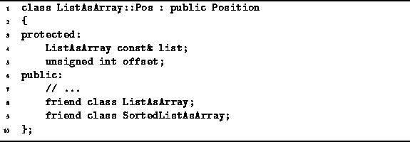

Data Structures and Algorithms
with Object-Oriented Design Patterns in C++
Data Structures and Algorithms
with Object-Oriented Design Patterns in C++
As shown in Program  ,
the abstract class Position is
derived from the class Iterator.
Recall from Chapter that an iterator
is used to systematically visit one-by-one
all of the items in a container.
An essential characteristic of an iterator is that at any instant,
it refers to exactly one item in the container.
To refer to an item in the container,
it must keep track of the position of the item.
Therefore, we may view an iterator as a kind of abstract position
in an ordered list.
,
the abstract class Position is
derived from the class Iterator.
Recall from Chapter that an iterator
is used to systematically visit one-by-one
all of the items in a container.
An essential characteristic of an iterator is that at any instant,
it refers to exactly one item in the container.
To refer to an item in the container,
it must keep track of the position of the item.
Therefore, we may view an iterator as a kind of abstract position
in an ordered list.
Program gives the declaration of the
ListAsArray::Pos class which is a Position
(and therefore an Iterator)
associated with the ListAsArray ordered list class.
ListAsArray::Pos objects contain two member variables--list and offset.
The former is a reference to an ordered list;
the latter records an offset in the corresponding array.

Program: ListAsArray::Pos Class Definition
 Copyright © 1997 by Bruno R. Preiss, P.Eng. All rights reserved.
Copyright © 1997 by Bruno R. Preiss, P.Eng. All rights reserved.